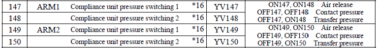

Service History
Subject: NS-8080HW Index Transfer Mode
Handler Model: NS-8080HW (S/N: 182025)
Controller: RC520
Date: 31 Oct 2011
Symptom
SMC controller for High Contact Force shows 0.3 for Index Arm 1 and 0.09 for Index Arm 2 during contact.
Therefore, we would like to understand function/know how of this controller and regulator adjustment if any.
It seems many valve controller this time and we would like to understand more like how to ensure high contact is correct or same etc....
Is this normal? Because we expect to see same air pressure value.
Little bit difference we can understand But 0.3 and 0.09 is too big difference.
Action
Anyway, it can not be adjusted the speed.
The purpose of regulator means that it is adjusted by transportation pressure.
It is compliance unit pressure controlled.
Note:
Transportation pressure: Index hand go to Input Shuttle to pick up device.
It will be used during the time.
Contact pressure: Index hand go to socket to contact socket.
It is NOT necessary to use high contact force during pick up device from shuttle.
Regarding for contact force on the SMC display, it shows transfer contact force.
(The transfer contact force is while Index hand pick up devices at Input shuttle.)
I think that the latest software should be kind of stable number on the display.
